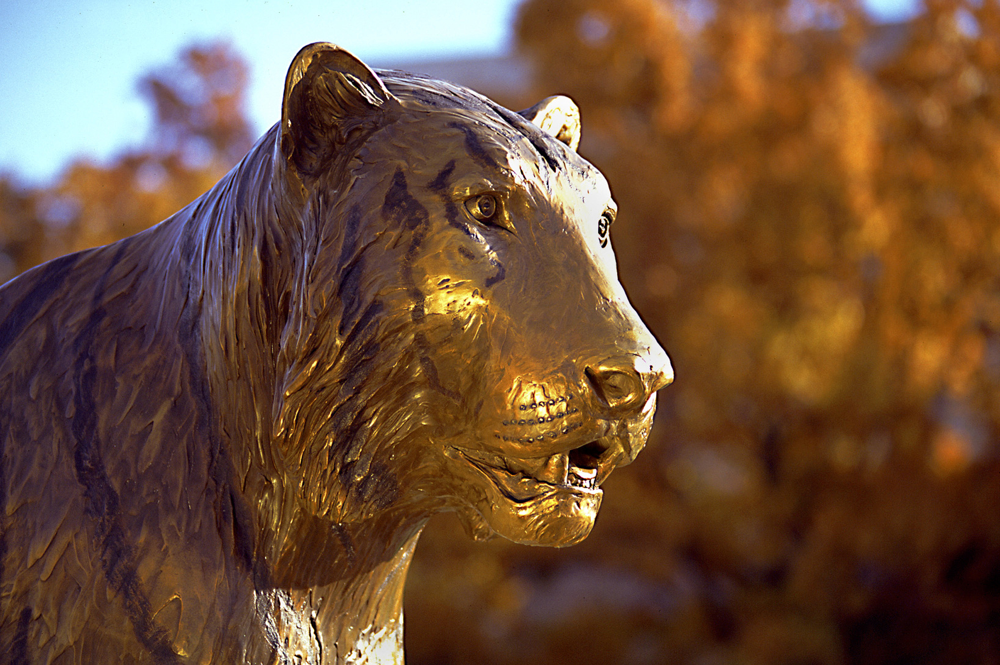

Katrina Troy, Winter '21 Grad. Photo courtesy of Katie Dahle

Tigers aren't tigers without Missou! Photo courtesty of the Board of Curators
Traditions and the Quad. Photo courtesy of Jackie Lamb
Welcome to the University of Missouri's School of Journalism
The site will serve as a homebase for many questions involving the J-School. There are the requirements for classes along with advice for which ones to take when. There is help for how to get involved and how to make sure you are taking care of yourself.
Our mission is "We educate preeminent journalists, strategic communication professionals and scholars using our world-renowned Missouri Method to seek and communicate truth for the benefit of democratic society, setting the standard for quality journalism and strategic communication worldwide." (Curators of the University of Missouri)